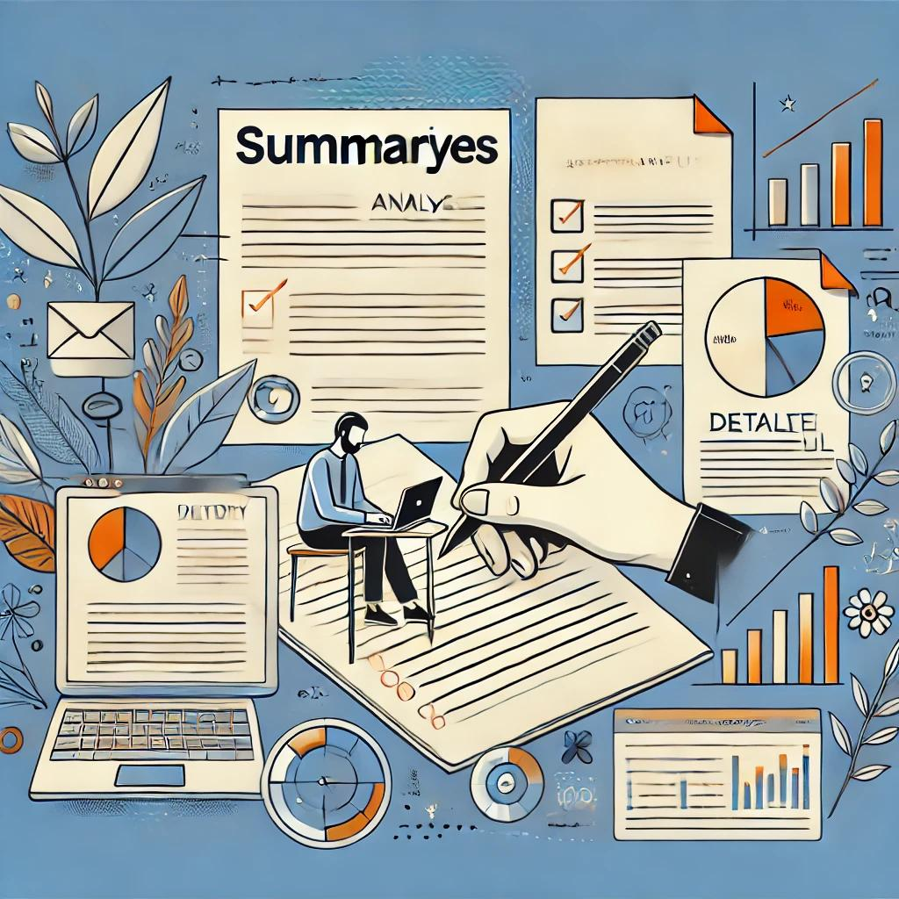

Description
Ce projet consiste à organiser son développement professionnel, avec un focus sur la présentation du métier d’administrateur système réseau, l’analyse du choix de ce métier, et la comparaison de différentes offres d’emploi.
1 personne
1 mois

Compétences
- Recherche et analyse d’informations sur les métiers IT
- Capacité à rédiger des résumés et des analyses
- Connaissance de soi
Outils utilisés
- Microsoft Word pour la rédaction du dossier
- Internet pour la recherche d’informations
Documents liés
Le dossier complet peut être téléchargé en utilisant le lien ci-dessous :
Télécharger le dossier AP1